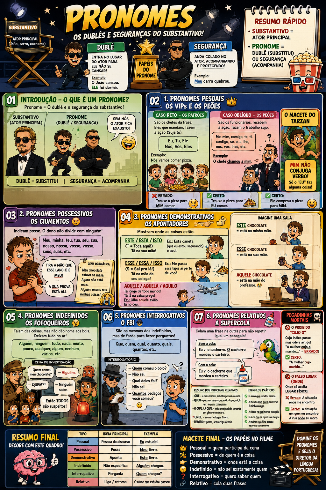

Material de estudo: Pronomes Material complementar · Ver fonte no GitHub
🧠 Introdução — O que é um Pronome? O que é Pronome? O substantivo nomeia seres, objetos, lugares, sentimentos e outras entidades. O pronome pode substituir ou acompanhar um substantivo. 🎬 O exemplo do cinema Imagine o substantivo como o ator principal da frase. O pronome pode funcionar como um ajudante , substituindo ou acompanhando esse substantivo. Função 1 — Pronome Substantivo O pronome pode substituir o substantivo. Exemplo: João cansou. Ele foi dormir.Ele substitui o termo João .Função 2 — Pronome Adjetivo O pronome pode acompanhar um substantivo. Exemplo: Meu carro quebrou. Meu acompanha o substantivo carro .🆚 Pronome Substantivo x Pronome Adjetivo Tipo Função Exemplo Pronome substantivo Substitui o substantivo Ele chegou.Pronome adjetivo Acompanha o substantivo Meu carro.
2. Pronomes Possessivos 😠 O que são Pronomes Possessivos? Indicam relação de posse ou pertencimento. Exemplos: meu, teu, seu, nosso , entre outros. Exemplo de Pronome Possessivo Meu chocolate estava na mesa.Alguém mexeu nas minhas coisas! 🚨 Ambiguidade com 'seu' e 'sua' "O chefe discutiu com o funcionário sobre o seu salário." O salário é do chefe ou do funcionário? O pronome pode gerar dupla interpretação . ⚠️ Como evitar a ambiguidade? Observe sempre quem é o referente do possessivo. Quando necessário, a frase deve ser reescrita para deixar claro o possuidor. 3. Pronomes Demonstrativos 👈 🎯 Regra do T / S / A T → ESTE / ESTA / ISTO S → ESSE / ESSA / ISSO A → AQUELE / AQUELA / AQUILO 👉 ESTE / ESTA / ISTO Relacionam-se, em regra, àquilo que está próximo de quem fala. Exemplo: Esta caneta é azul. Macete: T de 'Toca Aqui' . 👉 ESSE / ESSA / ISSO Relacionam-se, em regra, àquilo que está próximo de quem ouve. Exemplo: Me passa esse lápis aí perto de você. Macete: S de 'Sai Pra Lá' . 👉 AQUELE / AQUELA / AQUILO Relacionam-se, em regra, àquilo que está distante de quem fala e de quem ouve. Exemplo: Olha aquele avião lá no céu. Macete: A de 'Ali Longe' . 🆚 Pronomes Demonstrativos Grupo Formas Ideia principal Macete T este, esta, isto Próximo de quem fala Toca Aqui S esse, essa, isso Próximo de quem ouve Sai Pra Lá A aquele, aquela, aquilo Distante de ambos Ali Longe
4. Pronomes Indefinidos 🤫 O que são Pronomes Indefinidos? Referem-se aos seres ou às quantidades de maneira imprecisa ou indeterminada . Exemplos: alguém, algum, ninguém, muitos, poucos , entre outros. 🔎 Exemplo de Indefinido Alguém comeu meu bolo.O pronome não identifica exatamente quem realizou a ação. 🚨 A posição de 'algum' altera o sentido Antes do substantivo: Algum amigo me ajudou.Sentido: pelo menos um amigo ajudou. Depois do substantivo: Amigo algum me ajudou.Sentido: nenhum amigo ajudou. 🆚 'Algum' antes x depois Posição Exemplo Sentido Antes Algum amigo me ajudou.Pelo menos um Depois Amigo algum me ajudou. Nenhum
5. Pronomes Interrogativos 🕵️♂️ O que são Pronomes Interrogativos? São empregados em perguntas diretas ou indiretas. Exemplos: que, quem, qual, quanto . 🕵️♂️ O FBI da Frase Imagine que esses pronomes estão fazendo um interrogatório. Eles procuram descobrir uma pessoa, uma coisa, uma escolha ou uma quantidade. O Interrogatório Quem comeu o bolo?Qual deles foi?Quantos pedaços você comeu?📋 Principais Interrogativos Pronome Exemplo Quem Quem chegou?Que Que aconteceu?Qual Qual você prefere?Quanto Quanto custa?
🧠 Resumo Final 📋 Quadro Resumo dos Pronomes Tipo Função / Ideia Exemplo Pessoal Refere-se às pessoas do discurso Eu estudei.Possessivo Indica posse Meu livro.Demonstrativo Aponta ou situa Este livro.Indefinido Indica de forma imprecisa Alguém chegou.Interrogativo Formula pergunta Quem chegou?Relativo Relaciona orações O aluno que chegou.
🎯 Revisão em 30 segundos PESSOAIS → pessoas do discurso.POSSESSIVOS → posse.DEMONSTRATIVOS → posição ou referência.INDEFINIDOS → referência imprecisa.INTERROGATIVOS → perguntas.RELATIVOS → conectam e retomam um antecedente.🗺️ Mapa Mental — Pronomes 
🗺️ Mapa Mental — Pronomes · Clique para ampliar 8. Pronomes Demonstrativos — Referenciação Textual 🔎 📖 Demonstrativos também organizam o texto Além de indicar posição no espaço, os pronomes demonstrativos podem retomar ou antecipar informações dentro do texto. Anáfora : o pronome retoma algo que já foi mencionado.Catáfora : o pronome anuncia algo que ainda será apresentado.🆚 Anáfora x Catáfora Relação Ideia Exemplo Anáfora Retoma informação anterior O Brasil cresceu. Isso é ótimo. Catáfora Antecipa informação posterior Isto é o mais importante: estudar.
👉 Este / esta / isto Em muitos contextos de referenciação textual, este/esta/isto pode anunciar uma informação que ainda será apresentada. Exemplo: Isto é o que mais importa: estudar. Na relação espacial, também pode indicar proximidade de quem fala. 👉 Esse / essa / isso Em muitos contextos de referenciação textual, esse/essa/isso pode retomar uma informação já mencionada. Exemplo: O Brasil cresceu. Isso é ótimo. Na relação espacial, pode indicar proximidade de quem ouve. 🚨 Dois elementos já citados Quando se retomam dois termos anteriormente mencionados, é comum usar aquele para o termo mais distante/primeiro e este para o termo mais próximo/segundo. Exemplo: João e Pedro chegaram. Aquele estava cansado; este , animado. Macete: aquele = mais distante; este = mais próximo . 9. Pronomes de Tratamento 👑 👑 O que são? São formas utilizadas para tratar alguém de maneira respeitosa, formal ou protocolar. Embora se refiram ao interlocutor, as formas de tratamento exigem concordância verbal e pronominal em 3ª pessoa . Exemplos: você, Vossa Excelência, Vossa Senhoria, Vossa Santidade, Vossa Majestade . 🚨 Vossa x Sua Vossa é usada quando se fala diretamente com a autoridade ou pessoa tratada.Exemplo: Vossa Excelência pode assinar o documento? Sua é usada quando se fala sobre a autoridade ou pessoa tratada para terceiros.Exemplo: Sua Excelência o Ministro não compareceu. 🎯 Macete — Vossa = você; Sua = ele/ela VOSSA → estou falando com a pessoa.SUA → estou falando sobre a pessoa.⚠️ Concordância A forma de tratamento exige verbo na 3ª pessoa . Exemplo: Vossa Excelência poderá decidir. Não: Vossa Excelência podereis decidir.